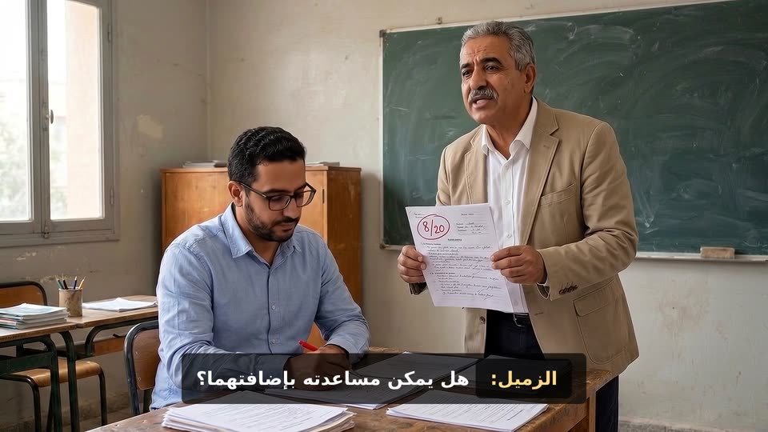
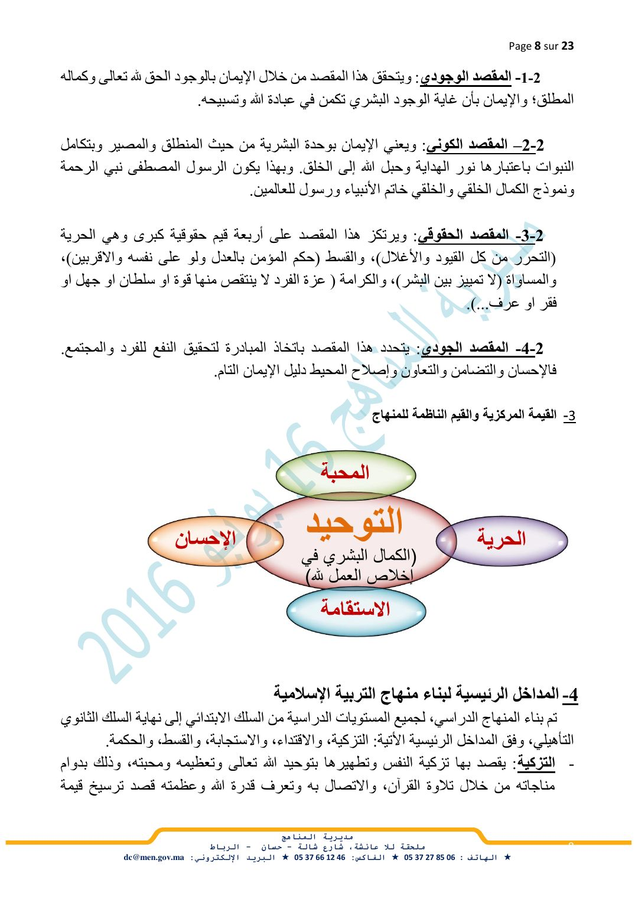

08
نموذج تطبيقي: حصة تكوينية رقمية مصغرة
«منظومة القيم في منهاج التربية الإسلامية»: تحليل القيمة المركزية والقيم الناظمة انطلاقاً من وضعية مهنية.

فيديو الوضعية · 60 ثانية

حصة من 30 دقيقة يقودها الأستاذ المكوّن، سندها درس «حق الله: الوفاء بالأمانة والمسؤولية» (الأولى باكالوريا، مدخل القسط)، ومرجعها الرسمي الصفحتان 8 و22 من منهاج 2016. تندرج ضمن المحطة 5 (ديداكتيك التربية الإسلامية ومكونات المنهاج).
01 · الوضعية المهنية
فيديو قصير وتفاعل أولي
فيديو قصير وتفاعل أولي
02 · الخريطة الرسمية
التوحيد والقيم الناظمة الأربع
التوحيد والقيم الناظمة الأربع
03 · ورشة التحليل
أحكام معللة وربط بالدرس
أحكام معللة وربط بالدرس
04 · التقويم الرقمي
تصحيح آلي وتقويم بشري
تصحيح آلي وتقويم بشري
توظيف الذكاء الاصطناعي: إنتاج الوضعية المصورة بأدوات توليد الفيديو والصوت، وبرمجة التطبيق التفاعلي، مع مراجعة بشرية لكل المخرجات. شخصيات الفيديو أساتذة في قاعة الأساتذة، دون أي تجسيد ممنوع.